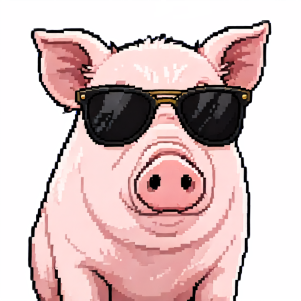

01
Hear it
in context.
Train your ear with short, natural clips before you worry about perfect tones.
INPUT / 聽CANTONESE, UNLOCKED
A practical, low-pressure way to learn Cantonese — one useful phrase, one tiny habit, one real conversation at a time.

01 / THE METHOD
Fluency is less about knowing everything and more about having the right few things ready when you need them.
See the daily loop →Train your ear with short, natural clips before you worry about perfect tones.
INPUT / 聽Practice phrases you can actually use at the cha chaan teng or on the MTR.
OUTPUT / 講Turn one new phrase into a tiny daily ritual. Consistency does the heavy lifting.
HABIT / 用02 / YOUR DAILY LOOP
Don’t learn more words.
Learn the words you’ll
actually say.
03 / PHRASE OF THE DAY
Start with the phrases that open doors. Tap the card to reveal the Cantonese, then say it out loud.